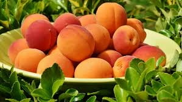

Descubra a Diversidade dos Tipos de Pêssego
O pêssego, além de ser delicioso e nutritivo, também se apresenta em uma variedade incrível de tipos, cada um com suas características únicas. Conheça agora mesmo as principais variedades de pêssego e escolha a sua preferida:
Pêssego Amarelo
O tipo mais comum, conhecido por sua doçura e suculência. Possui casca amarela lisa e polpa amarela firme.
Pêssego Branco
Com sabor mais suave e menos ácido que o amarelo, possui casca branca e polpa branca macia.
Sem pelos na casca, possui textura mais lisa e sabor mais doce que o pêssego tradicional.
Pêssego Vitorino
Formato achatado e sabor mais ácido, ideal para compotas e conservas.
Pêssego Pinguim
Tamanho pequeno e sabor doce, perfeito para consumo fresco.
Pêssego Belmiro
Polpa branca e sabor adocicado, muito apreciado para consumo fresco e sucos.
Essas são apenas algumas das diversas variedades de pêssego disponíveis. Explore diferentes tipos e descubra qual o seu preferido!